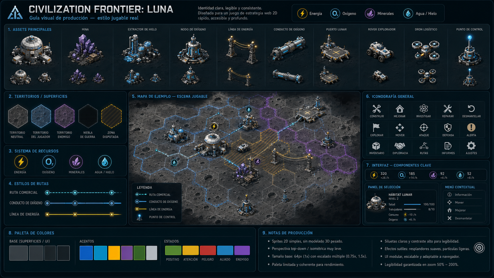
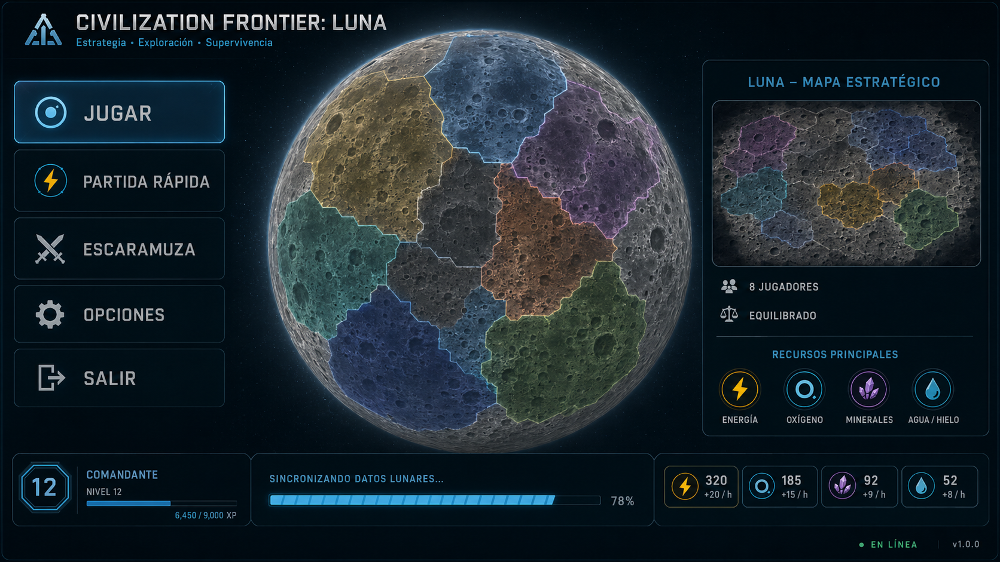
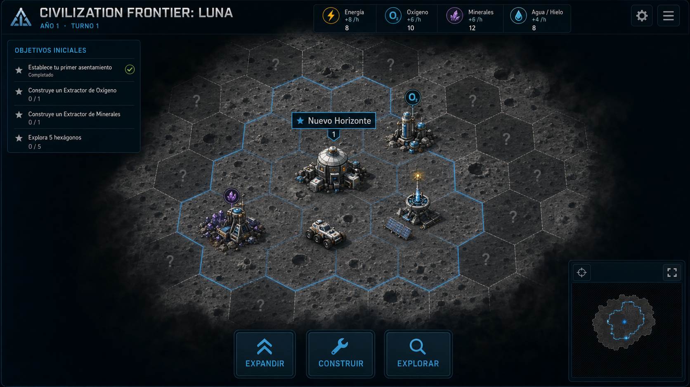
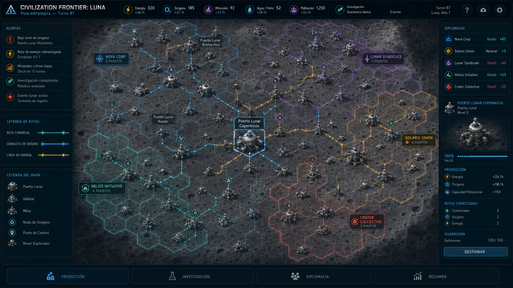
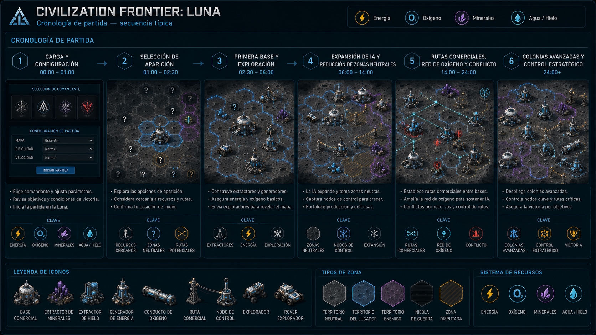

Contrato principal
Guía de producción
Paleta, rutas, sprites, territorios, iconos y densidad.
Galería canónica de la dirección visual aprobada para v0.01. Son referencias producibles con mapa web 2D, sprites, overlays y UI modular. Consulta README.md en esta carpeta para conocer qué detalles son vinculantes y cuáles son solo composición.

Paleta, rutas, sprites, territorios, iconos y densidad.

Jerarquía de entrada y presentación del mapa.

Spawn, fog, objetivos y lectura inicial.

Facciones, rutas, puertos y densidad máxima.

Secuencia objetivo de una partida completa.